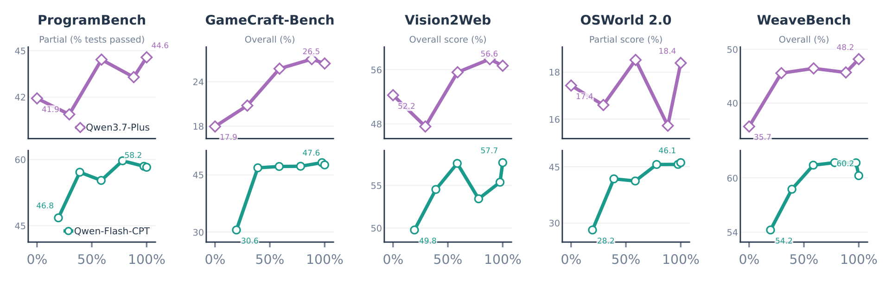

三、课题研究内容
□ 研究二（续）：训练流程与实验结果
① 复刻任务构造
GitHub 高质量开源 GUI 应用，覆盖 Ubuntu / macOS / Windows / Android / Web，与评测集去重
② 轨迹生成
Qwen3.8-Max 在隔离虚拟机池中并发执行"探索—实现—构建运行—核验修正"
③ 可验证筛选
以任务级行为 verifier 拒绝采样（Rejection Sampling），每平台取 7,000 条，共 3.5 万条轨迹
④ 模型后训练
同一数据分别监督微调（SFT）Qwen3.7-Plus 与持续预训练（CPT）后的 Qwen-Flash
➜
➜
➜

迁移到代码、视觉代码与混合计算机操作 5 个分布外基准：两种初始化均一致提升
250 题 · 5 平台
RecreationBench 评测集
2.8%
最强模型全部通过的题目比例
最高 +17.9
分布外基准提升（OSWorld 2.0 部分得分）
35.7 → 48.2
WeaveBench Overall（平均部分得分，非 PassRate）
结论：训练期间 5 个分布外基准均提升（相对首个已评估检查点）；SFT 净收益待对照确认 → 研究三推广到职业环境